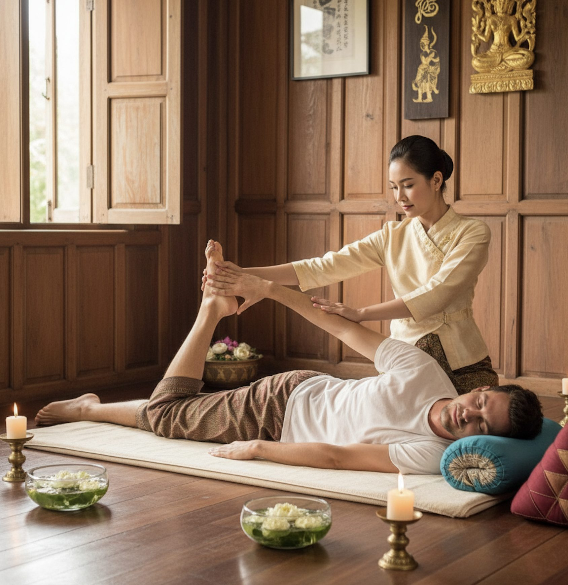

Traditionelle Thaimassage – Nuad Thai
Erleben Sie die heilsame Kraft einer der ältesten Massageformen der Welt: die Traditionelle Thaimassage, auch bekannt als Nuad Thai. Diese jahrhundertealte Technik verbindet yoga-ähnliche Streck- und Dehnübungen mit rhythmischen Druckbewegungen entlang der Energiebahnen des Körpers.
Die Behandlung fördert die Durchblutung, löst tief sitzende Blockaden und steigert die Beweglichkeit. Sie wird individuell auf Ihre Bedürfnisse abgestimmt – für ein rundum wohltuendes Erlebnis.
- Stressabbau und Entspannung
- Förderung der Durchblutung
- Linderung von Muskelverspannungen und Schmerzen